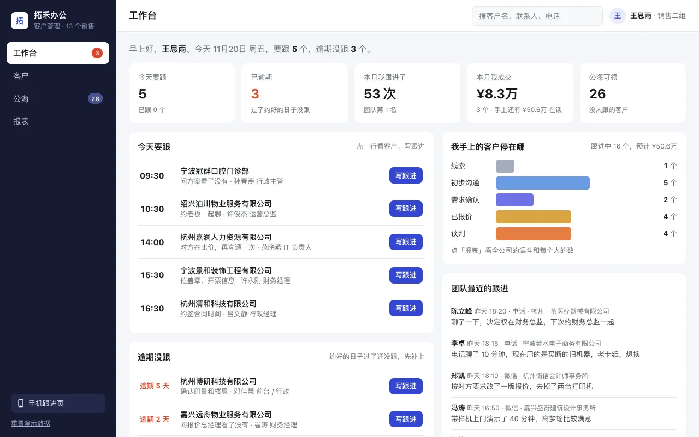
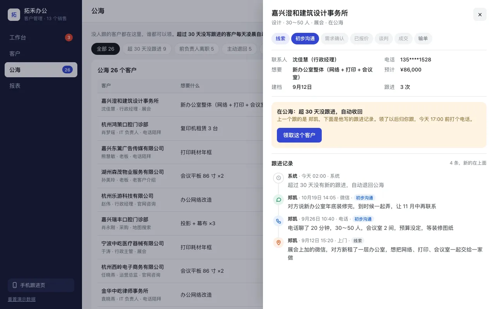
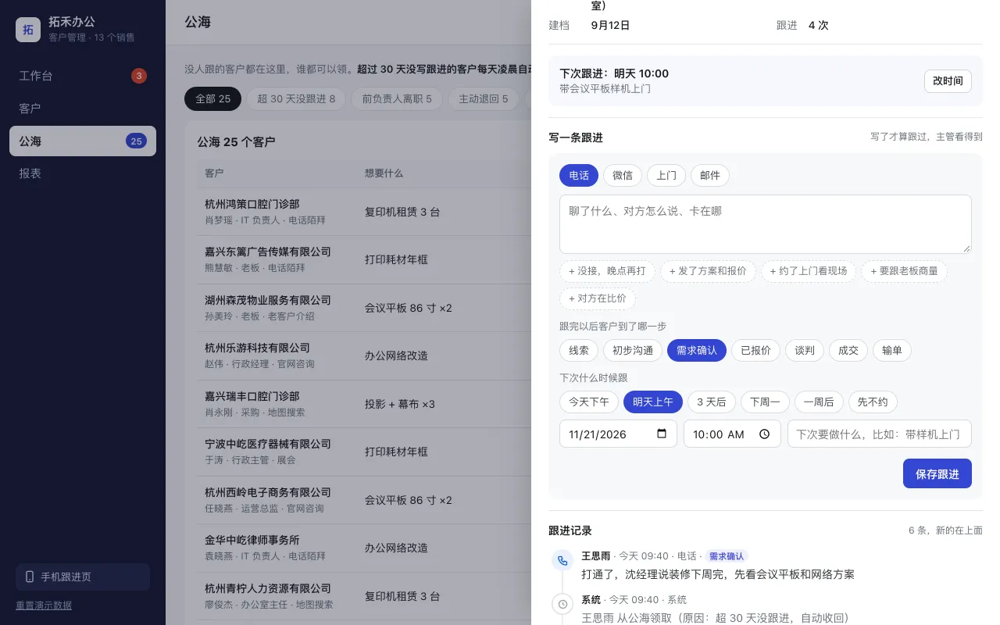
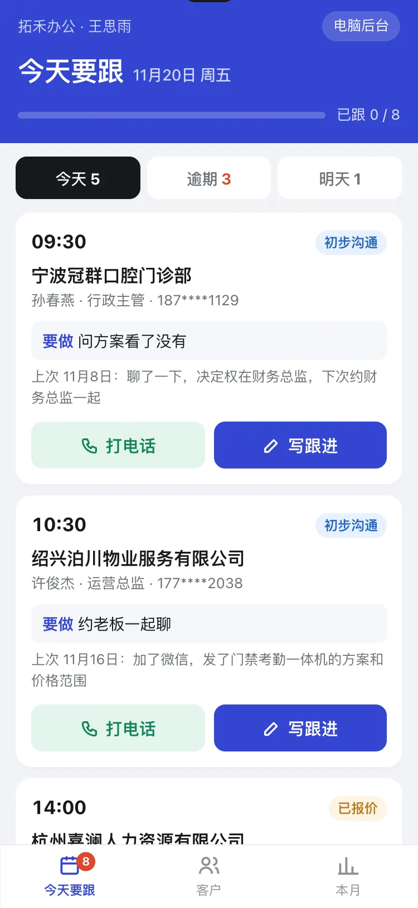
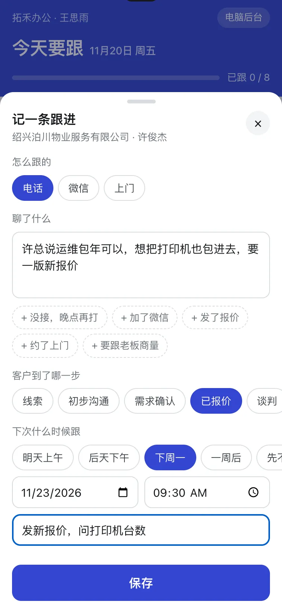
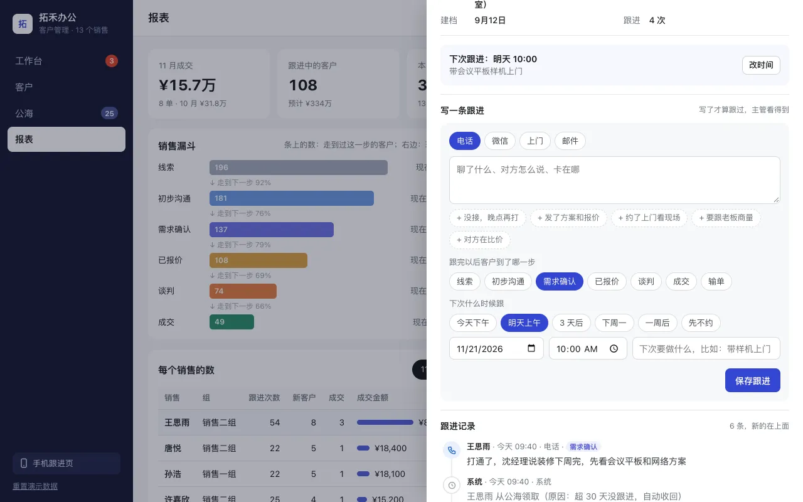

客户、聊过什么、下次哪天打电话，都记在一个地方。没人跟的客户进公海谁都能领，今天要跟谁一打开就看到，月底每个人跟了几次、成交多少自己算好。
适合 有几个到几十个销售、客户还记在 Excel 和微信里的公司
几个关键画面
左右滑 · 6 张





什么场景
一家卖办公设备和企业服务的小公司（复印机租赁、会议平板、办公网络、IT 运维包年），13 个销售分两个组（公司名、客户、数据都是编的）。客户大多是几十人的公司，一单从第一次电话到签合同要跟好几次。
原来怎么干
客户记在每个人自己的 Excel 和微信里。说好「下周再联系」的，到了下周常常忘了；销售一离职，他手上的客户和聊到哪一步就都没了，有时候两个人同时在跟同一家还不知道。
主管想知道谁这周跟得勤、哪些单子卡在报价那一步，只能周会上一个个问；月底算每个人成交多少，要把几份表对一遍。
做了什么
- 客户放进一个库谁负责、想要什么、预计多少钱、走到哪一步，能搜能筛；同一家公司两个人建不了两份
- 公海30 天没写跟进的客户每天凌晨自动退回，离职同事的客户也转过来，谁都能领；每人手上有上限，不让一个人囤着
- 跟进记录电话、微信、上门都记一条，时间线一眼看完以前聊过什么；改阶段要顺手写为什么
- 下次跟进提醒每条跟进都约下次时间；今天要跟的、过了日子没跟的放在工作台最上面
- 手机跟进页在外面跑客户，打完电话直接记一条、约下次，跟电脑后台是同一份，主管马上看得到
- 报表漏斗每一步走掉多少、每个销售跟进几次成交多少、按月成交、哪个渠道来的客户好成交
能接到哪
阶段叫什么、几天不跟算掉进公海、每人最多领几个、报表看哪些数，都按你们现在的叫法和规矩来。
怎么交
- 先对你们的流程和表现在客户记在哪、销售怎么分、主管想看哪些数
- 出能点的演示像上面这样，用你们的阶段名和字段，大家先点着试
- 按你们的说法改哪里叫法不对、哪里多一步少一步，改到销售愿意用
- 拿真实数据跑一遍再交把你们现有的客户表导进去，数对得上再交，附一份使用说明
想做一个类似的
加微信，说说你们现在客户记在哪、销售有几个、想管住哪几件事，按你们的规矩来做。
微信：business_rick